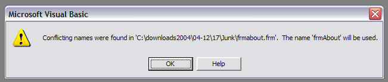

What is 'Conflicting names were found...'
THE PROBLEM

An occasional irritation when downloading is a messagebox like this when loading a project.
This can be very irritating because it is difficult to track down and repair. Because it is caused by a casing problem VB cannot resolve it.
NOTE The project junk.vbp is provided with the bug in place for you to play with after you have read this article.
Thanks to Kevin for finding a 4th place where VB can get the name of a file and generate this error. I have added this to the comments below.
THE EXPLANATION
The official one from VB help (Click 'Help' button).
The name of a form occurs twice in the source file for a Form, User Control, Property Page, or User Document. The names are different ,so the specified name will be used. This error can occur if the file was modified by an editor other than Visual Basic.
Helpful,eh? ;)
My explanation
All references to 'Form' in this also apply to User Control, Property Page and User Document.
All references to 'FRM' in this also apply to CTL, PAG and DOB.
VB appears to use 2 names for each Form displayed in the Project window as
FormName(FileName.frm)
FormName is the name you use in code
FileName is the file in the project folder (well almost)
If you accept the defaults (bad idea) you get Form1(Form1.frm), Form2(Form2.frm), etc
The tricky bit is that there are actually 4 names involved;
1. FormName Stored in the FRM file in the line 'Attribute VB_Name =FormName'
2. FileName(Displayed) in VB Project Window and
3. FileName(Folder) real name as it appears in Windows Explorer.
4. FormName(Begin) (Kevin's bug) At the top of the hidden text in FRM files is the line Begin VB.Form FormName . If this doesn't match the case of FormName you get the messagebox again. I think the only way to trigger this is to edit the FRM text directly but let me know if you find a way to get it out of sync using (or mis-using) VB directly.
The Conflicting names problem occurs if FormName is the same spelling as FileName(Folder) and you change the case of FileName(Folder) in Windows Explorer. You might do this intending to give a consistent appearance to file names or because you started with default names and wanted to use more useful names. (see AVOIDING IT IN THE FUTURE for the official way to do it)
VB gets the FileName(Displayed) from the VBP file.
It is stored in a line like Form=FrmAbout.frm (Open a VBP file in NotePad to see this. See NotePad Programming 1st)
The FileName(Displayed) uses the case from this line.
But FileName(Folder) need not have the same case because Windows is not case sensitive when it comes to loading files .
So if FileName(Folder) is FrmAbout.frm then acceptable VBP file lines are Form=FrmAbout.frm or Form=FRMABOUT.FRM or Form=fRmAbOuT.fRm or any other case shift you like.
Unfortunately this can disguise the fact that the case of the real FileName(Folder) and the FormName don't match.
The FormName is stored inside the FRM file on the line 'Attribute VB_Name =frmabout.frm'
(Open a FRM file in NotePad to see the hidden text in forms. See NotePad Programming 1st)
If the spelling is the same but the cases don't match then the error message occurs.
THE FIX
To fix it open the FRM file in NotePad (See NotePad Programming 1st) and change the FormName to match the FileName(Folder). OR vice versa but as you'll have to open the file to find the correct casing you may as well edit the FormName
AVOIDING IT IN THE FUTURE
1, As soon as you create a new Form open the Properties Window (F4) and enter the name you want in code.
2. VB will then use the same name for FormName and FileName.
3. You can change both names freely as long as the Form has not been saved simply by using the Properties Window.
Once it is saved
1 To change the FormName use the Properties Window.
NOTE This is not a good idea once you have started coding because you will then have to find all code references to the old FormName and update them by hand. Use Run with full compile (Ctrl+F5) to run code and VB will take you straight to any instances of the old name.
You can limit this problem by only calling a form from its own module and using the 'Me' keyword. Then you only need to adjust the Load Form or Form.Show commands on other forms.
2 To change the FileName(Folder) use the menu File|Save <fileName> As...'
NOTE this will leave the old file in the folder and create a new file. Don't forget to delete the old one.
NotePad Programming
Programming with NotePad has at least 2 restrictions;
1. Be careful; you lose all VB's hand-holding, error detection. This is especially true if you edit the hidden data in FRM files. See FormName(Begin) (Kevin's bug) above for an example. Until you feel very confident use a copy of the original project.
2. Never edit a file that is currently loaded into VB.
a. VB wont know you edited it until you reload.
b. If you save the files from VB they will overwrite with the data loaded into memory and you'll lose any NotePad edits.
So why would you do it?
1. Moving Files
If you program using standard service modules that you keep in folders remote from the project's main folder you might want to move the file to the project folder for zipping/uploading. Either place the file directly in the project folder or in a sub-folder of the project folder (you are less likely to forget to include these file in your zip files).
a. You should do this using the menu File|Save <fileName> As...' but that can be very slow if you have a lot of files to move (you have to navigate from the original folder to the project folder for each file in turn). The advantage is that VB automatically updates the VBP file.
b. A faster (and riskier) way is to use the Windows Explorer and Copy (don't Move) the files. But the VBP file won't know about the copied files. So you have to open it in NotePad and edit the paths directly.
This introduces some problems, different files are stored differently in the VBP file.
Forms (and other Control bearing objects) use the format Form=[Path]<FileName>.frm
Modules (and other Code only modules) use the format Module=<ModuleName>;[Path]<FileName>.bas
The first word describes the sub-branch of the the project that will contain the file in the Project window
<ModuleName> is the name used in code to refer to procedures/variables in the file. Forms store it internally and this leads to the problem described above. Bas and Class files also store it internally but it doesn't seem to lead to the same problem.
[Path] is optional;
No Path: Module=basMain;basMain.bas In the same folder as the VBP file.
Simple Path: Module=basMain;Modules\basMain.bas In a sub-folder of the VBP's folder.
Complex Path 1: Module=basMain; ..\basMain.bas In a folder above the VBP's folder but on the same branch of the folder tree. The number of ..\ tells you how far up the branch it is.
Complex Path 2: Module=basMain; ..\..\..\Program Files\Microsoft Visual Studio\VB98\SillyLocation\basMain.bas In a different branch of the folder tree. The number of ..\ tells VB how far up the folder tree to find the specified branch.
To edit the path after moving the file change the path to which ever is correct (probably No or Simple Path)
c. The best policy is to always use the menu File|Save <fileName> As...' as soon as you load an existing module. Even if it is a well constructed and trusted module you may need to tweak it for the purposes of the current project. Using the same file in several projects could lead to nasty surprises if a tweak interferes with other projects.
On the other hand if you actually improve the module don't forget to copy it back to the storage folder you were using (After testing any other projects that use it)
2. Fixing DownLoads
a. If you download code that has all the files but hasn't had its VBP file edited properly then you can use this to include the files that VB reports as missing when you try to load it. Of course you can simply use the menu Project/Add Files(Ctrl+D) to re-introduce the VBP file to the files but if there are several files this can be irritating. There is also the possibility that the files are not present because they were never zipped. Editing the VBP file lets you check that the files exist quickly by just looking in the Windows Explorer while editing.
b. You can also use this to remove unnecessary References (carefully). Some code may contain references to ocx that are not on your system but were part of the Coder's Component/Tool Window. This can be very irritating. VB will remove these references, but only if you continue to load the project and then run and save it. But unless you know about this problem you are likely to stop loading and close VB without trying the code.
NOTE You can stop it happening in your own code very easily.
Open menu Project/
3. Over-The-Top editing (SHOW-OFFS and EXPERTS ONLY)
ALWAYS use a backup copy when doing this.
Once you have studied the contents of FRM files you will realise that it is technically possible to change the appearance of a form by editing in NotePad.
I can only think of one reason to try this, removing all references to an ActiveX control and replacing it with a standard one( E.G. fancy buttons that replace CommandButton). However this can be very tricky and I wouldn't really recommend it except in very small forms.
NOTE the new control MUST to be one of the standard controls that appear in the Component/Tool window when you load a standard.exe project. Only these controls can appear in a project without an explicit reference in the VBP file